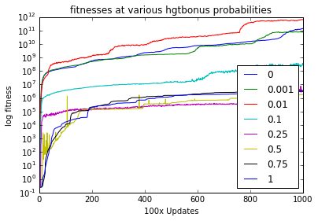

Right, so spent some time cleaning up last night's code, replacing annoying bits of APTO with std functions. All better, fewer random de-allocations.
I'm going to try out some other IDEs and see if they're better than CLion, which I've tried out for a day or so, and found to be pretty stable, but interface-buggy.
Right, so I messed with all the others, plus KDevelop, and all of them suck, or can't work directly with CMake files. :( So, CLion it is, at least for now.
One thing I failed to mention is an addition to the events file that must be included in order to read from an spop file for the fragments.
u 0:100:end InsertHGTGenomeFragments detail-100000.spop
Reviewed the various uptake instructions. They are defined as follows:
cHardwareCPU.cc
InstUptakeHGT() - base implementation of HGT Uptake, controlled by paramters. Shoves the HGT fragment into a queue, awaiting cell division.
Inst_Uptake_HGT_Bonus, ...noBonus, ...noHGT... sit right below, and just call the base above.cHardwareBase.cc
doHGTUptakenMutation() - called at divide, I guess, calls the reservoir of HGT Uptaken and shoves them in during divide.TODO
LGT_FILL_MODE)
LGT_FILL_MODE to HGT_FILL_MODE to keep the systems separate, because screw Bryson's half-assed thing.
LGT_FILL_MODEPoked a bit yesterdy at the instructions.
Uh, I think I must have lost some stuff. Will have to look in the dropbox.
Obvs, recovered my stuff, but I hate that. Makes me paranoid.
Worked on the HGT stuff. Filled in 95% of the last bits. Todo are some stats gathering, and some kind of bug with the bonus, where it's not applying, somehow. Or something is happening. Dunno.
Fixed it. Added some more stats gathering. Should now be feature complete, and non-obvious-bug free. Deploying and will now tinker locally.
Down by the pool, setting up the HGT runs on the HPCC, including a parameter sweep.
Submitted some jobs to the HPCC, doing a sweep of parameters for the probability value, using each instruction. A total of 8*4 jobs.
Looks like the HPCC has reinstated some limits on array jobs. Annoyed. Looks like 1000 jobs total. I'm going to have to bitch at somebody about it. :(
All the jobs are now complete, and I'm pulling the data down. Initially, I got an iPython Notebook running in a venv on the HPCC, but it looks like it's not the latest version, and getting things to run from over there is just not feasible because I still have to install all the frelling libraries. So, fuckit. I'm just copying the data over. It's a lot of little files, so it shouldn't be a big deal.
Based on a cursory look at the run.logs, it looks like all the runs finished. So, yay!
Setting up an iPy to take a look at the data.
http://localhost:8888/notebooks/Dropbox/School_Docs/Research/HGT/1_3_2016_Averages.ipynb
Wooo, worked pretty steadily. Got some acceptable figures of what's going on within iPy.

So, the takeaway is that the sweet spot for fitness seems to be 0.01 probability of HGT.